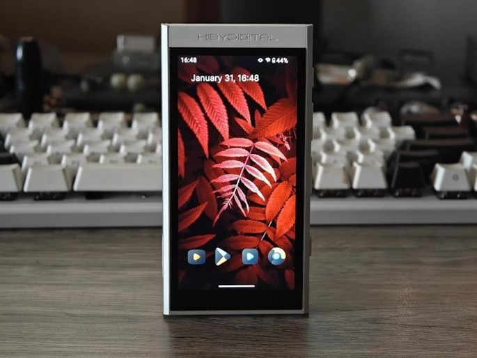
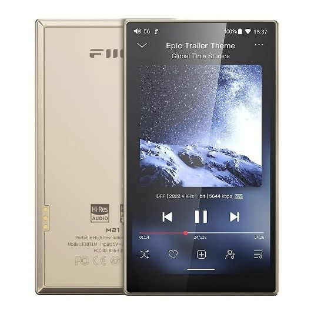
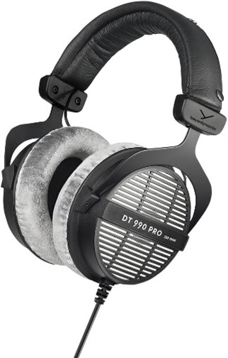
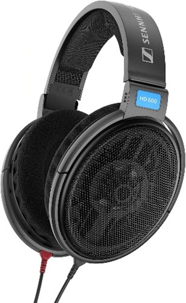
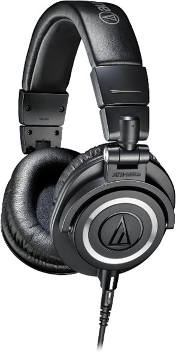
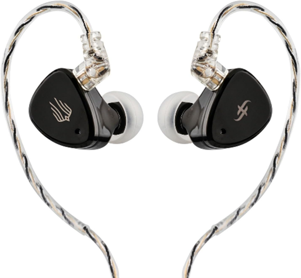
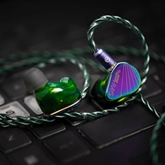
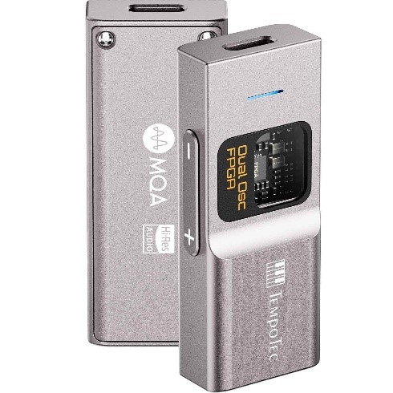
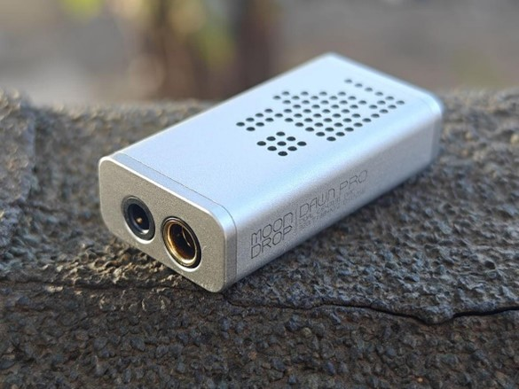
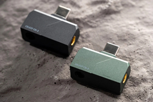

Hi-FI
HiFi proviene de la expresión en inglés High Fidelity, que en español se traduce como alta fidelidad.
Se trata de un concepto y norma de calidad utilizado para describir la reproducción de sonido con una fidelidad máxima
respecto a la grabación original. Su objetivo es que el audio se escuche tal como el artista y el productor lo idearon
en el estudio, eliminando casi por completo el ruido, las alteraciones y la distorsión.
Para lograr una experiencia de alta fidelidad, la cadena de sonido (desde la fuente hasta los altavoces) debe cumplir
con estándares de alta calidad técnica. Esto incluye tanto a la fuente de audio, como sería un archivo flac, amplificadores,
bocinas o audífonos.
DAPS
Dispositivos portatiles diseñados para almacenar, organizar y reproducir música digital con la calidad de sonido que
ningún teléfono inteligente puede ofrecerte.
A diferencia de los smartphones comunes, un DAP prioriza los componentes de audio dedicados.
HiBy M300

Destaca por fluides gracias a Android 13Integra un chip DAC Cirrus Logic CS43131, ofreciendo una firma sonora cálida,
con graves profundos, medios nítidos y agudos.
TempoTec Variations V3 Blaze

ofrece audio de alta definición con soporte para DSD512 y PCM768kHz, incorpora un DAC doble AK4493SEQ, logrando una relación
señal-ruido de 117dB para un sonido limpio y detallado. Incluye salida balanceada con 2 OPA1652 y 4 x SGM8262 como OP-AMP,
optimizando el rendimiento de los auriculares y ofreciendo una experiencia auditiva más profunda y equilibrada.
FiiO M21

Logra un Audio de alta resolución con 4 chips DAC CS43198, ofreciendo una calidad de sonido excepcional con soporte para
formatos como DSD, FLAC, WAV, MP3 y otros.
Headset
Estos headsets priorizan la calidad sobre la comodidad, sacrifican funciones activas como conectividad
bluetooth o 2.4 a cambio de una ecualización mas equilibrada o plana, consiguiendo emular la calidad de la grabación
original sin alterar su composición artificialmente.
beyerdynamic DT 990 PRO

son unos auriculares de estudio abiertos con diseño circumaural que ofrecen una excelente amplitud espacial, comodidad
superior y un sonido transparente, aunque requieren de un buen amplificador o interfaz para rendir al máximo.
Su construcción abierta permite el flujo de aire, lo que crea una escena sonora muy amplia y natural, ideal para trabajar
en el estudio sin fatiga auditiva.
Sennheiser HD 600

Son considerados una referencia histórica de neutralidad y fidelidad de audio en el mercado desde su lanzamiento original
en 1997. Ofrece una claridad de timbre sumamente honesto y natural, con un nivel de detalle analítico ideal para mezcla y
escucha critica, diseño ligero y comodidad duradera con repuestos fáciles de conseguir.
Audio-Technica ATH-M50X

Auriculares de estudio cerrados, recientemente popularizados y valorados por su excelente relación calidad-precio y sonido
equilibrado. Con un sonido potente y detallado, graves presentes pero controlados, medios claros y agudos definidos.
Iems
Los IEM (In-Ear Monitors) son auriculares de alta precisión diseñados para encajar dentro del canal auditivo,
ofreciendo un aislamiento superior y un sonido detallado.
Simgot EM6L 1DD + 4BA

Aclamados por su sonido equilibrado y gran rendimiento, cuentan con un driver dinámico de 8mm para graves y cuatro
drivers de armadura balanceada para medios y agudos. Siguen la curva de preferencia Harman 2019, lo que se traduce
en un perfil sonoro natural, cohesivo y agradable para largas sesiones sin fatiga auditiva.
Moondrop Rays

Diseñados especialmente para videojuegos y contenido multimedia. Cuentan con un cable tipo USB-C con tarjeta de
sonido DSP integrada. Utilizan un sistema de doble driver de 10mm y uno planar de 6mm.
TRUTHEAR PURE
Cuentan con un controlador dinámico y 3 armaduras balanceadas, destacan por su sonido cálido, con unos medios ricos
y naturales, y unos graves nítidos que nunca resultan excesivos. Sus agudos son suaves y no fatigantes, lo que permite
disfrutar de una experiencia auditiva cómoda durante horas.
Dongle DACS
Son pequeños adaptadores portatiles con conexión al puerto USB-C de un dispositivo para convertir la señal
de audio digital en analógica con mucha mayor calidad, aprovechando la capacidad superior de su chip de audio
con respecto al del smartphone o computadora
Tempotec Sonata BHD Pro

Es un potente amplificadopr y adaptador portátil que destaca por ofrecer un sonido detallado con un toque
cálido y una excelente relación calidad-precio. Cuenta con doble chip CS43131 Cirrus Logic. Con potencia de
salida de hasta 280mW a 32Ω mediante la conexión balanceada de 4.4 mm (y 2 Vrms / 125mW en la de 3.5 mm).
Moondrop Dawn Pro 2

es un pequeño amplificador y convertidor digital-analógico (DAC) portátil que mejora la potencia y resolución
respecto al modelo original, aunque arrastra ciertos detalles en su software.Diseño y Construcción.
Kinera Celest CD2

Su diseño ultraportatil y con salida USB-C macho directamente al cuerpo de aleación de zinc lo hacen un dac
bastante cómodo para llevar día a día. Cuenta con un chip DAC Conexant CX31993 y un amplificador Maxim MAX97220.